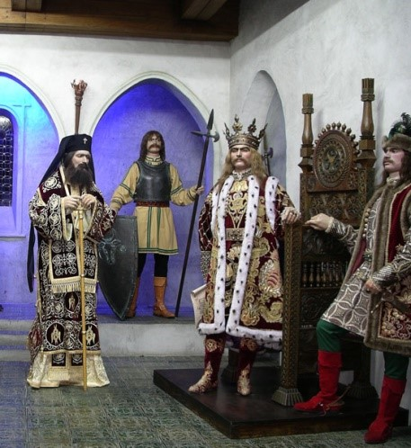

Domnia lui Ștefan cel Mare

1.Infrastuctura
Principalele puncte de trecere prin vad a marilor râuri erau
la Verișcani și Reuseni, pe Siret, Țuțora și Cernăuți, pe Prut, Vadul Jorii, pe Nistru
și Bătinești pe Putna. Poduri umblătoare erau la Târgul Siret, pe Siret, Cernăuți,
pe Prut și Roman, pe Moldova.
Principalele surse de venit ale domniei erau reprezentate de veniturile
încasate din monopoluri și taxe vamale. Domnul avea monopolul exploatării și comercializării
sării și argintului, precum și monopolul comerțului cu pește, ceară și blănuri prețioase.
Vămile erau așezate pe principalele artere comerciale. Sistemul vamal cuprinde vămile externe,
dispuse pe frontieră și vămi interne. Vama de import se plătea doar la Suceava iar vama de export
la vămile externe de la Cernăuți (pentru Regatul Poloniei), Chilia (pentru Imperiul Otoman),
Cetatea Albă (pentru Regatul Crimeii), Adjud (pentru Regatul Ungariei) și Putna (Țara Românească).
În plus mai existatu vămi interne unde se plătea o taxă de tranzit, la Lăpușna, Roman, Bacău, Vaslui,
Bârlad și Tecuci.
Ca surse secundare de venit o reprezentatu arenzile încasate de la proprietarii de case
si atelierele meștesugărești din orașe, amenzile și taxele de judecată (tretina - a treia parte din
lucrul judecat) și veniturile satelor și ocoaleleor domnești. Domnul devenea de asemenea proprietar
de drept al moșiilor rămase fără moștenitor precum și a celor confiscate de la boierii condamnați pentru
„hiclenie” (trădare). Ștefan cel Mare a fost unul dintre puținii domni ai Moldovei care au bătut o monedă
proprie - gros moldovenesc, fapt ce reprezenta inclusiv o modalitate de a afirmare a suveranității.
Monedele erau confecționate din argint, cu un diametru de 13 milimetri, având ștanțate stema țării și
inscripțiile MONETAMOLDAVIE pe avers și STEFANVSVOIEVODA pe revers. Valorile erau de un gros și o jumătate de gros.
Cantitatea de masă monetară a fost însă una mică, baterea monedelor fiind determinată în primul rând de scopuri
politice - plata serviciilor militare prestate de boierime sau a mercenarilor și mai puțin pentru facilitarea schimburilor
comerciale, care se bazau în continuare pe monedele emise de mai puternicele state vecine.
Viața economică si socială
Infrastructura de transport a Moldovei în timpul domniei lui Ștefan cel Mare era
slab dezvoltată, neexistând drumuri construite sau întreținute de autorități.
Trecerile peste râuri se făcea, de regulă, prin vaduri, iar dacă acestea erau prea
adânci, pe poduri umblătoare. Podurile fixe erau de lemn, peste râurile mai mari sau
de piatră, peste pârâuri.
Administrația financiară